"ПРОЕКТ МИРОВОЗЗРЕНИЕ" / УЧАСТИЕ / ПОШАГОВАЯ ИНСТРУКЦИЯ ПО ОТПРАВКЕ ФАЙЛОВ.
Пошаговая инструкция по загрузке файлов на Яндекс-диск
Пошаговая инструкция по загрузке файлов на Redpost
___________________________________________
Загрузка файлов на Redpost
Плюсиком добавляем файлы
В получателя записываем mastergoo@mail.ru
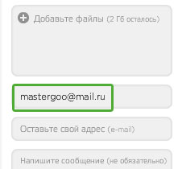
можно заполнить поле для обратной связи и ввести пояснение в поле сообщения
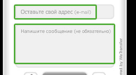
и жмём отправить.
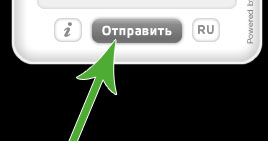
Всё!
___________________________________________
На Yandex.ru
Если нет ящика, его нужно завести (сделать это несложно и все шаги детально описаны во время создания)
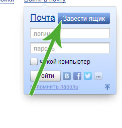
После регистрации аккаунта выбирааем "ещё" -> "Диск"
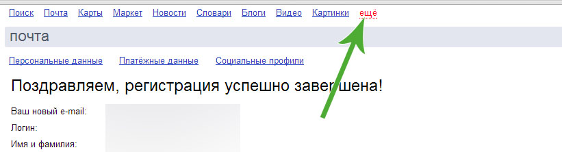
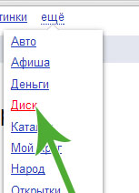
Далее начинаем работу с Яндекс-диском (можно тут же быстро и легко увеличить объём хранилища с 2ГБ до 8 или 10 ГБ)
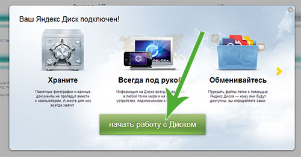
Далее непосредственно для загрузки файла выбираем "Диск" -> "Загрузить"
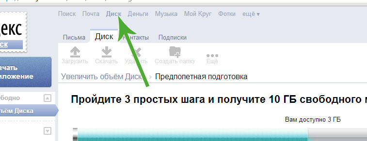
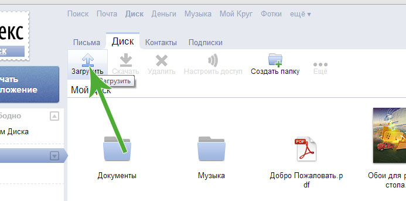
далее можно, кликнув "Выбрать файлы", выбрать видео-файлы через стандартный механизм операционной системы либо перетащить файлы из окна операционной системы в центр серенькой зоны по центру окна "Загрузка файлов"
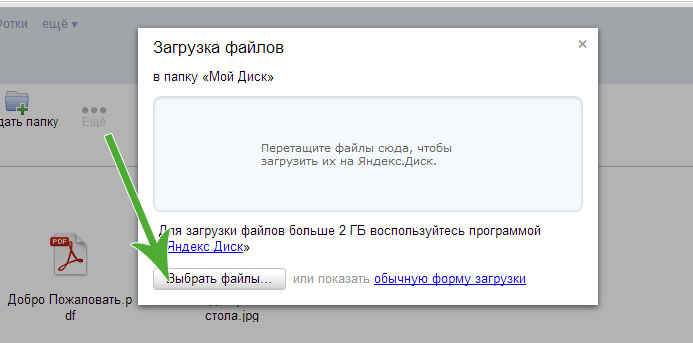
Потом выберите файл (стрелка1) и получите для него ссылку (стрелка 2), если файлов много - можно их перетащить например в документы, и -выделив уже папку "Документы" - получить для неё публичную ссылку (стрелка 2).
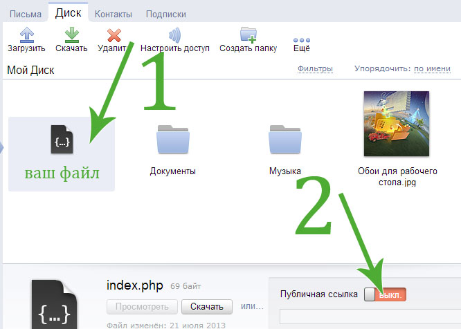
Затем отправляем ссылку письмом, кликнув в соответствующую пиктограмму.
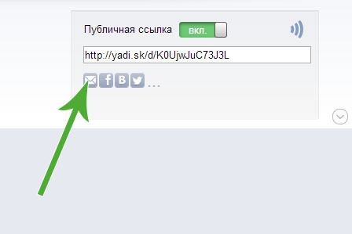
Если вы ещё не пользовались почтой, то вылезет всплывающее окно с предложением настройки почты.
Его можно пропустить.
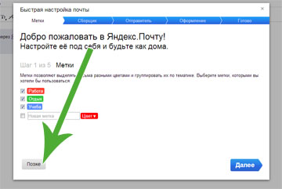
В письме пишем получателя mastergoo@mail.ru
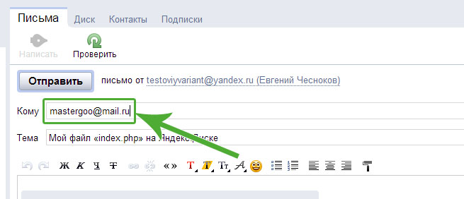
И отправить
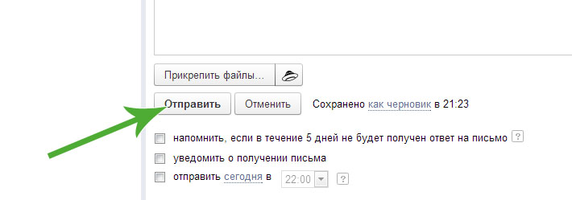
Всё!
___________________________________________